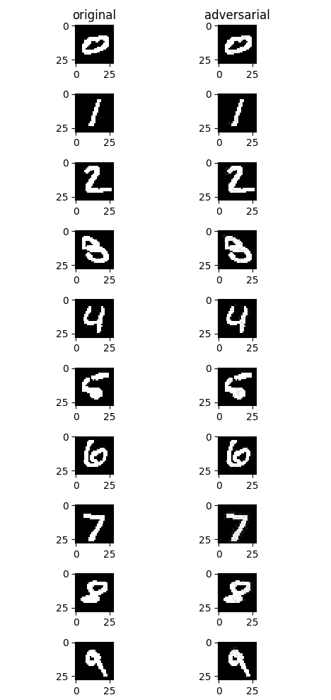

Improving Model Security with NAD Algorithm¶

Overview¶
This tutorial describes the model security protection methods provided by MindSpore Armour, helping you quickly use MindSpore Armour and provide certain security protection capabilities for your AI model.
At the beginning of AI algorithm design, related security threats are sometimes not considered. As a result, the developed AI model may easily be affected by malicious attackers, leading to inaccurate judgment of the AI system. An attacker adds small perturbations that are not easily perceived by human to the original sample, causing deep learning model misjudgment. This is called an adversarial example attack. MindSpore Armour model security toolkit provides functions such as adversarial example generation, adversarial example detection, model defense, and attack/defense effect evaluation, providing important support for AI model security research and AI application security.
The adversarial example generation module enables security engineers to quickly and efficiently generate adversarial examples for attacking AI models.
The adversarial example detection and defense modules allow users to detect and filter adversarial examples and enhance the robustness of AI models to adversarial examples.
The evaluation module provides multiple metrics to comprehensively evaluate the attack and defense performance of adversarial examples.
This section describes how to use MindSpore Armour in adversarial attack and defense by taking the Fast Gradient Sign Method (FGSM) attack algorithm and Natural Adversarial Defense (NAD) algorithm as examples.
The current sample is for CPU, GPU and Ascend 910 AI processor. You can find the complete executable sample code at https://gitee.com/mindspore/mindarmour/blob/master/examples/model_security/model_defenses/mnist_defense_nad.py
Creating an Target Model¶
The MNIST dataset is used as an example to describe how to customize a simple model as the target model.
Loading the Dataset¶
Use the MnistDataset API provided by the MindSpore dataset to load the MNIST dataset.
# generate dataset for train of test
def generate_mnist_dataset(data_path, batch_size=32, repeat_size=1,
num_parallel_workers=1, sparse=True):
"""
create dataset for training or testing
"""
# define dataset
ds1 = ds.MnistDataset(data_path)
# define operation parameters
resize_height, resize_width = 32, 32
rescale = 1.0 / 255.0
shift = 0.0
# define map operations
resize_op = vision.Resize((resize_height, resize_width),
interpolation=Inter.LINEAR)
rescale_op = vision.Rescale(rescale, shift)
hwc2chw_op = vision.HWC2CHW()
type_cast_op = transforms.TypeCast(ms.int32)
# apply map operations on images
if not sparse:
one_hot_enco = transforms.OneHot(10)
ds1 = ds1.map(operations=one_hot_enco, input_columns="label",
num_parallel_workers=num_parallel_workers)
type_cast_op = transforms.TypeCast(ms.float32)
ds1 = ds1.map(operations=type_cast_op, input_columns="label",
num_parallel_workers=num_parallel_workers)
ds1 = ds1.map(operations=resize_op, input_columns="image",
num_parallel_workers=num_parallel_workers)
ds1 = ds1.map(operations=rescale_op, input_columns="image",
num_parallel_workers=num_parallel_workers)
ds1 = ds1.map(operations=hwc2chw_op, input_columns="image",
num_parallel_workers=num_parallel_workers)
# apply DatasetOps
buffer_size = 10000
ds1 = ds1.shuffle(buffer_size=buffer_size)
ds1 = ds1.batch(batch_size, drop_remainder=True)
ds1 = ds1.repeat(repeat_size)
return ds1
Creating the Model¶
The LeNet model is used as an example. You can also create and train your own model.
Define the LeNet model network.
def conv(in_channels, out_channels, kernel_size, stride=1, padding=0): weight = weight_variable() return nn.Conv2d(in_channels, out_channels, kernel_size=kernel_size, stride=stride, padding=padding, weight_init=weight, has_bias=False, pad_mode="valid") def fc_with_initialize(input_channels, out_channels): weight = weight_variable() bias = weight_variable() return nn.Dense(input_channels, out_channels, weight, bias) def weight_variable(): return TruncatedNormal(0.02) class LeNet5(nn.Cell): """ Lenet network """ def __init__(self): super(LeNet5, self).__init__() self.conv1 = conv(1, 6, 5) self.conv2 = conv(6, 16, 5) self.fc1 = fc_with_initialize(16*5*5, 120) self.fc2 = fc_with_initialize(120, 84) self.fc3 = fc_with_initialize(84, 10) self.relu = nn.ReLU() self.max_pool2d = nn.MaxPool2d(kernel_size=2, stride=2) self.flatten = nn.Flatten() def construct(self, x): x = self.conv1(x) x = self.relu(x) x = self.max_pool2d(x) x = self.conv2(x) x = self.relu(x) x = self.max_pool2d(x) x = self.flatten(x) x = self.fc1(x) x = self.relu(x) x = self.fc2(x) x = self.relu(x) x = self.fc3(x) return x
Train LeNet model. Use the defined data loading function
generate_mnist_datasetto load data.mnist_path = "../common/dataset/MNIST/" batch_size = 32 # train original model ds_train = generate_mnist_dataset(os.path.join(mnist_path, "train"), batch_size=batch_size, repeat_size=1, sparse=False) net = LeNet5() loss = SoftmaxCrossEntropyWithLogits(sparse=False) opt = nn.Momentum(net.trainable_params(), 0.01, 0.09) model = Model(net, loss, opt, metrics=None) model.train(10, ds_train, callbacks=[ms.LossMonitor()], dataset_sink_mode=False) # get test data ds_test = generate_mnist_dataset(os.path.join(mnist_path, "test"), batch_size=batch_size, repeat_size=1, sparse=False) inputs = [] labels = [] for data in ds_test.create_tuple_iterator(): inputs.append(data[0].asnumpy().astype(np.float32)) labels.append(data[1].asnumpy()) test_inputs = np.concatenate(inputs) test_labels = np.concatenate(labels)
Test the model.
# prediction accuracy before attack net.set_train(False) test_logits = net(ms.Tensor(test_inputs)).asnumpy() tmp = np.argmax(test_logits, axis=1) == np.argmax(test_labels, axis=1) accuracy = np.mean(tmp) LOGGER.info(TAG, 'prediction accuracy before attacking is : %s', accuracy)
The classification accuracy reaches 98%.
prediction accuracy before attacking is : 0.9895833333333334
Adversarial Attack¶
Call the FGSM API provided by MindSpore Armour.
# attacking
# get adv data
attack = FastGradientSignMethod(net, eps=0.3, loss_fn=loss)
adv_data = attack.batch_generate(test_inputs, test_labels)
# get accuracy of adv data on original model
adv_logits = net(ms.Tensor(adv_data)).asnumpy()
adv_proba = softmax(adv_logits, axis=1)
tmp = np.argmax(adv_proba, axis=1) == np.argmax(test_labels, axis=1)
accuracy_adv = np.mean(tmp)
LOGGER.info(TAG, 'prediction accuracy after attacking is : %s', accuracy_adv)
attack_evaluate = AttackEvaluate(test_inputs.transpose(0, 2, 3, 1),
test_labels,
adv_data.transpose(0, 2, 3, 1),
adv_proba)
LOGGER.info(TAG, 'mis-classification rate of adversaries is : %s',
attack_evaluate.mis_classification_rate())
LOGGER.info(TAG, 'The average confidence of adversarial class is : %s',
attack_evaluate.avg_conf_adv_class())
LOGGER.info(TAG, 'The average confidence of true class is : %s',
attack_evaluate.avg_conf_true_class())
LOGGER.info(TAG, 'The average distance (l0, l2, linf) between original '
'samples and adversarial samples are: %s',
attack_evaluate.avg_lp_distance())
LOGGER.info(TAG, 'The average structural similarity between original '
'samples and adversarial samples are: %s',
attack_evaluate.avg_ssim())
The attack results are as follows:
prediction accuracy after attacking is : 0.052083
mis-classification rate of adversaries is : 0.947917
The average confidence of adversarial class is : 0.803375
The average confidence of true class is : 0.042139
The average distance (l0, l2, linf) between original samples and adversarial samples are: (1.698870, 0.465888, 0.300000)
The average structural similarity between original samples and adversarial samples are: 0.332538
After the untargeted FGSM attack is performed on the model, the accuracy of model decreases from 98.9% to 5.2% on adversarial examples, while the misclassification ratio reaches 95%, and the Average Confidence of Adversarial Class (ACAC) is 0.803375, the Average Confidence of True Class (ACTC) is 0.042139. The zero-norm distance, two-norm distance, and infinity-norm distance between the generated adversarial examples and the original benign examples are provided. The average structural similarity between each adversarial example and the original example is 0.332538. It takes 0.003125s to generate an adversarial example on average.
The following figure shows the effect before and after the attack. The left part is the original example, and the right part is the adversarial example generated after the untargeted FGSM attack. From a visual point of view, there is little difference between the right images and the left images, but all images on the right successfully mislead the model into misclassifying the sample as another incorrect categories.

Adversarial Defense¶
Natural Adversarial Defense (NAD) is a simple and effective adversarial example defense method, via adversarial training. It constructs adversarial examples during model training and mixes the adversarial examples with original examples to train the model. As the number of training iteration increases, the robustness of the model against adversarial examples improves. The NAD algorithm uses FGSM as the attack algorithm to construct adversarial examples.
Defense Implementation¶
Call the NAD API provided by MindSpore Armour.
from mindarmour.adv_robustness.defenses import NaturalAdversarialDefense
# defense
net.set_train()
nad = NaturalAdversarialDefense(net, loss_fn=loss, optimizer=opt,
bounds=(0.0, 1.0), eps=0.3)
nad.batch_defense(test_inputs, test_labels, batch_size=32, epochs=10)
# get accuracy of test data on defensed model
net.set_train(False)
test_logits = net(ms.Tensor(test_inputs)).asnumpy()
tmp = np.argmax(test_logits, axis=1) == np.argmax(test_labels, axis=1)
accuracy = np.mean(tmp)
LOGGER.info(TAG, 'accuracy of TEST data on defensed model is : %s', accuracy)
# get accuracy of adv data on defensed model
adv_logits = net(ms.Tensor(adv_data)).asnumpy()
adv_proba = softmax(adv_logits, axis=1)
tmp = np.argmax(adv_proba, axis=1) == np.argmax(test_labels, axis=1)
accuracy_adv = np.mean(tmp)
attack_evaluate = AttackEvaluate(test_inputs.transpose(0, 2, 3, 1),
test_labels,
adv_data.transpose(0, 2, 3, 1),
adv_proba)
LOGGER.info(TAG, 'accuracy of adv data on defensed model is : %s',
np.mean(accuracy_adv))
LOGGER.info(TAG, 'defense mis-classification rate of adversaries is : %s',
attack_evaluate.mis_classification_rate())
LOGGER.info(TAG, 'The average confidence of adversarial class is : %s',
attack_evaluate.avg_conf_adv_class())
LOGGER.info(TAG, 'The average confidence of true class is : %s',
attack_evaluate.avg_conf_true_class())
Defense Effect¶
accuracy of TEST data on defensed model is : 0.974259
accuracy of adv data on defensed model is : 0.856370
defense mis-classification rate of adversaries is : 0.143629
The average confidence of adversarial class is : 0.616670
The average confidence of true class is : 0.177374
After NAD is used to defend against adversarial examples, the model’s misclassification ratio of adversarial examples decreases from 95% to 14%, effectively defending against adversarial examples. In addition, the classification accuracy of the model for the original test dataset reaches 97%.